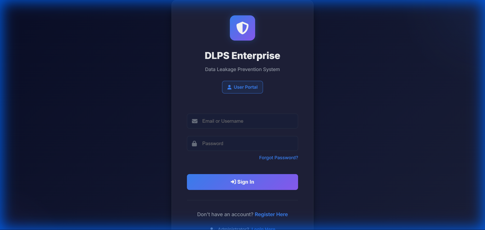
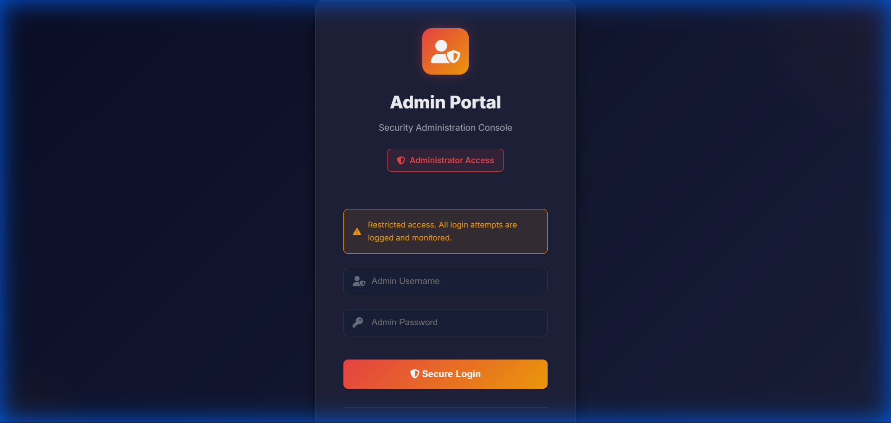
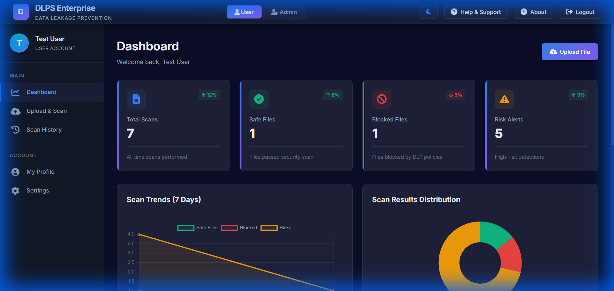
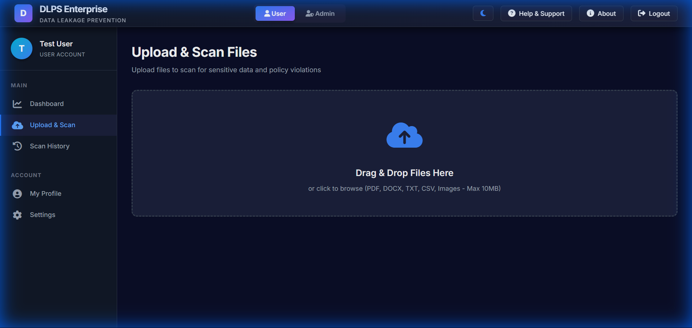
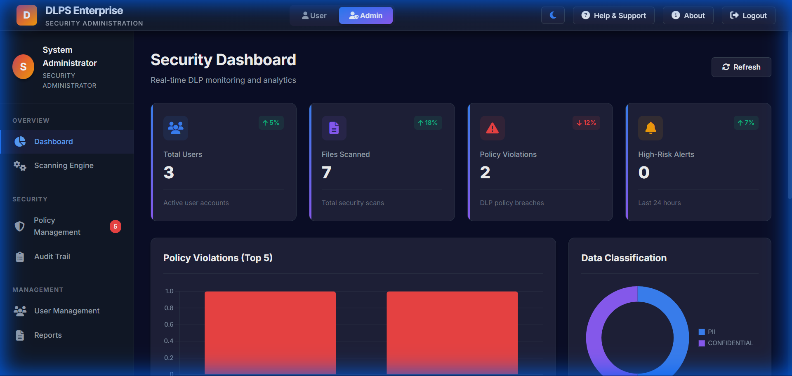
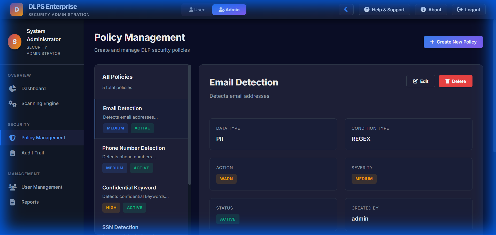
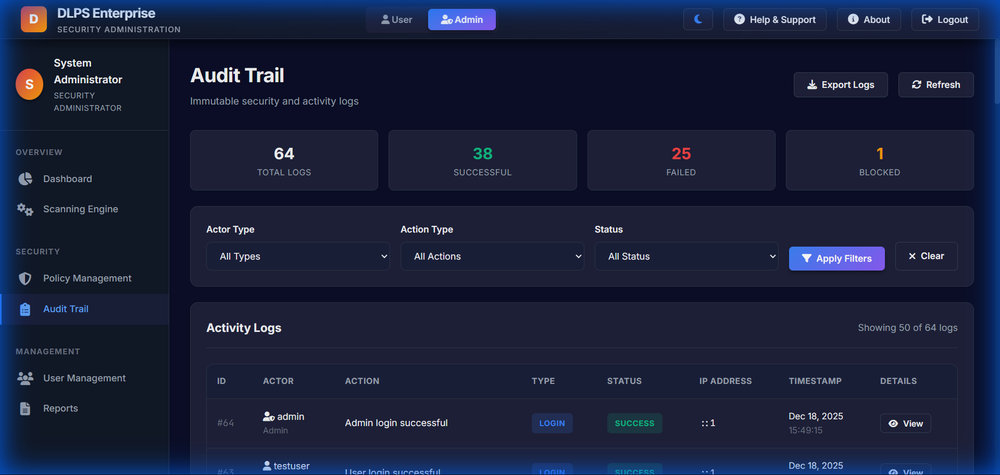

In the modern digital landscape, data security is paramount. The Data Leakage Prevention System (DLPS) is a comprehensive enterprise-grade web application designed to detect and prevent potential data breaches within an organization. The system monitors data transfer channels, specifically file uploads, to identify sensitive information such as Personally Identifiable Information (PII) and confidential keywords before it leaves the secure environment. This project implements a robust Role-Based Access Control (RBAC) model, ensuring a strict separation between User and Administrator privileges. Key features include a real-time scanning engine utilizing Regular Expressions (Regex) and pattern matching, an interactive dashboard for analytics, dynamic policy management, and an immutable audit trail for forensic analysis. The system is built using PHP for server-side logic, MySQL for the database, and a responsive frontend using HTML5, CSS3, and JavaScript, ensuring a secure and user-friendly experience for all stakeholders.
The Data Leakage Prevention System (DLPS) is a specialized security tool developed to address the growing threat of internal data theft and accidental data exposure. By implementing a gateway that scans all outgoing files, the system ensures compliance with organizational data security policies.
Traditional security measures often focus on external threats (firewalls, antivirus). However, a significant percentage of data breaches originate internally—either through malicious intent or employee negligence. Organizations lack affordable, easy-to-configure tools to monitor and block sensitive data transmission in real-time.
The project covers the development of a web portal where users can upload files for verification. Administrators can define what constitutes "sensitive data" by creating dynamic policies. The scope extends to reporting and analytics but excludes network-level packet sniffing (currently focused on application-level file upload scanning).
Currently, many organizations rely on manual auditing or trust-based policies, which are prone to human error. Commercial DLP solutions exist but are often prohibitively expensive and complex to deploy for smaller setups.
The proposed DLPS is a lightweight, effective, and user-friendly web application. It automates the detection process, provides instant feedback to users, and alerts administrators. It centralizes policy management, making it easy to update security rules across the organization instantly.
The system follows the Model-View-Controller (MVC) architectural pattern principles (adapted for core PHP).
dlp_policies.file_scans).users: Stores user credentials and profile info.admins: Specialized table for high-privilege accounts.file_scans: Records of every file processed (filename, risk level, hash).dlp_policies: Rules defining regex patterns and severity.audit_logs: Chronological record of system activities.The core engine iterates through active policies. For each policy, it applies the associated Regular Expression to the file content.
foreach ($policies as $policy) {
if (preg_match($policy['pattern'], $fileContent)) {
$riskLevel = $policy['severity'];
// Flag file as risk
}
}
$_SESSION['role'] on every page load.
| ID | Test Description | Expected Result | Actual Result | Status |
|---|---|---|---|---|
| TC1 | Admin Login | Access Dashboard | Accessed | Pass |
| TC2 | User Access Admin Page | Access Denied | Redirected to Login | Pass |
| TC3 | Upload SSN File | Block/Critical Alert | Blocked | Pass |
| TC4 | Upload Safe Text | Safe Status | Safe Status | Pass |
The DLPS project successfully demonstrates a functional security tool capable of mitigating data leakage risks. It meets all primary objectives, providing a secure, user-friendly, and effective solution for file monitoring.
Login Page
To maintain security, the user and admin login pages are separate.
Admin Login
User Dashboard
The user dashboard provides a quick overview of recent activities and scan status.
File Upload Interface
Users can drag and drop files for real-time DLP scanning.
Admin Dashboard
A SOC-style dashboard showing scanning trends, risk distribution, and system health.
Policy Management
Admins can verify and configure regex patterns for data detection.
Audit Trails
Immutable logs of all system activities for forensic analysis.
